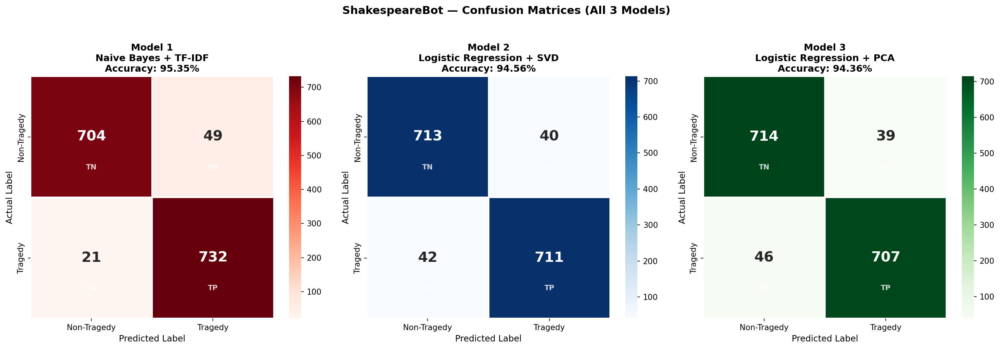

Project Overview
ShakespeareBot is a conversational AI that embodies William Shakespeare, combining a Retrieval-Augmented Generation (RAG) knowledge base with a reproducible machine-learning pipeline that classifies text chunks from Shakespeare's works as Tragedy or Non-Tragedy.
The ML pipeline is orchestrated with DVC (Data Version Control), ensuring every experiment is tracked, reproducible, and version-controlled alongside the source code.
DVC Pipeline
The pipeline consists of four sequential stages, each with declared dependencies and outputs tracked by DVC:
Balance classes
Train/test split
Save 6 model files
matrix plots
DAG (dvc dag)
+---------+
| prepare |
+---------+
*
*
*
+-----------+
| featurize |
+-----------+
*
*
*
+-------+
| train |
+-------+
*
*
*
+----------+
| evaluate |
+----------+
Reproduce the pipeline
git clone <repo> cd ShakespeareBot python -m venv venv && venv/Scripts/activate pip install -r requirements.txt # place the 10 .txt source files in data/docs/ dvc repro
Models
Three classifiers were trained and compared, each using a different feature representation derived from the same TF-IDF matrix:
Results
| Model | Accuracy | Precision | Recall | F1 Score |
|---|---|---|---|---|
| Naive Bayes + TF-IDF | 95.35% | 93.73% | 97.21% | 95.44% |
| Logistic Regression + SVD | 94.56% | 94.67% | 94.42% | 94.55% |
| Logistic Regression + PCA | 94.36% | 94.77% | 93.89% | 94.33% |
Gold values indicate the best score per metric. All models achieve >94% accuracy, confirming that TF-IDF features carry strong genre signal in Shakespearean text. Naive Bayes outperforms both dimensionality-reduction approaches, likely because the raw term-count distribution is already highly discriminative for this corpus.
Confusion Matrices
Generated by dvc repro and saved to metrics/confusion_matrices.png:

Full Notebook
The complete exploratory analysis, model development, and visualisations are in the Jupyter notebook:
View Notebook